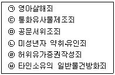
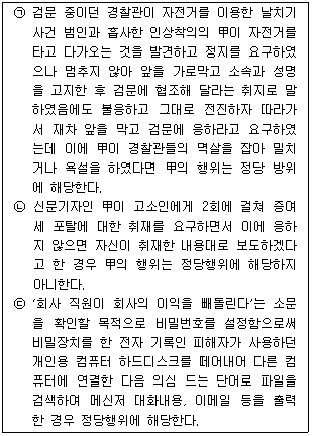
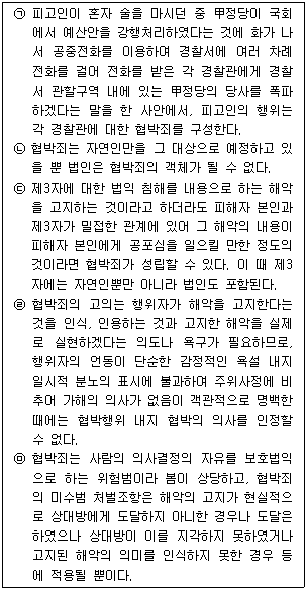
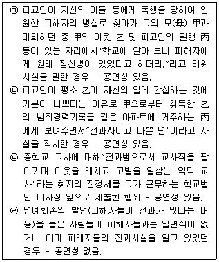
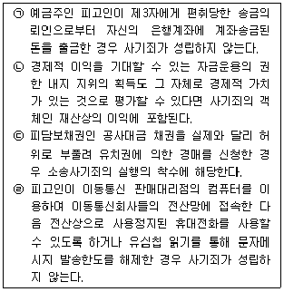
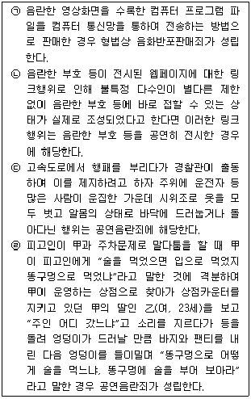

경찰공무원(순경)-형법 (2013-08-31 기출문제)
1. 다음은 죄형법정주의에 대한 설명이다. 가장 적절하지 않은 것은?(다툼이 있는 경우 판례에 의함)
- 교육감 선거에 공직선거법의 시·도지사 선거에 관한 규정을 준용한 구 지방교육자치에 관한 법률 제22조 제3항은 죄형법정주의에 위배되지 아니한다.
- 일반음식점 영업자인 피고인이 주로 술과 안주를 판매함으로써 구 식품위생법상 준수사항을 위반하였다는 내용으로 기소된 사안에서 위 준수사항 중'주류만을 판매하는 행위'에 안주류와 함께 주로 주류를 판매하는 행위도 포함된다고 해석하는 것은 죄형법정주의에 위배되지 아니한다.
- 정비사업 시행에 관한 서류와 관련 자료에 대한 열람·등사 요청에 즉시 응할 의무를 규정하고 이를 위반하는 행위를 처벌하는 구 도시 및 주거환경정비법 제86조 제6호, 제81조 제1항은 죄형법정주의에 위배되지 아니한다.
- '약국 개설자가 아니면 의약품을 판매하거나 판매 목적으로 취득할 수 없다'고 규정한 구 약사법 제44조 제1항의'판매'에 무상으로 의약품을 양도하는'수여'를 포함시키는 해석은 죄형법정주의에 위배되지 아니한다.
(정답률: 알수없음)

2. 다음은 실행의 착수시기에 대한 설명이다. 가장 적절하지 않은 것은?(다툼이 있는 경우 판례에 의함)
- 주간에 피해자의 아파트 출입문 시정장치를 손괴하다가 마침 귀가하던 피해자에게 발각되어 피고인이 도주한 경우 형법 제331조 제2항의 특수절도죄의 실행의 착수를 인정할 수 없다.
- 다가구용 단독주택인 빌라의 잠기지 않은 대문을 열고 들어가 공용 계단으로 빌라 3층까지 올라갔다가 1층으로 내려온 경우 주거침입죄의 실행의 착수를 인정할 수 있다.
- 사기도박에서 사기적인 방법으로 도금을 편취하려고 하는 자가 상대방에게 도박에 참가할 것을 권유하는 등 기망행위를 개시한 때에 실행의 착수를 인정할 수 있다.
- 부정경쟁방지 및 영업비밀보호에 관한 법률 제18조 제2항에서 정하고 있는 영업비밀부정사용죄에 있어서는 행위자가 당해 영업비밀과 관계된 영업활동에 이용 혹은 활용할 의사 아래 그 영업활동에 근접한 시기에 영업비밀을 열람하는 행위를 한 경우 그 실행의 착수를 인정할 수 없다.
(정답률: 알수없음)
3. 다음은 고의에 대한 설명이다. 가장 적절하지 않은 것은? (다툼이 있는 경우 판례에 의함)
- 살인죄에 있어 범의는 자기의 행위로 인하여 타인의 사망의 결과를 발생시킬만한 가능 또는 위험이 있음을 인식 또는 예견하면 족한 것이고 사망의 결과발생 또는 희망할 것은 필요치 않는다.
- 운전면허증 앞면에 적성검사기간이 기재되어 있고 뒷면 하단에 경고 문구가 있다는 점만으로 피고인이 정기적성검사 미필로 면허가 취소된 사실을 미필적으로나마 인식하였다고 추단하기 어렵다.
- 상해죄의 성립에는 상해의 원인인 폭행에 대한 인식이 있으면 충분하고 상해를 가할 의사의 존재까지는 필요하지 않다.
- 甲이 인터넷사이트 내 자살관련 카페 게시판에 청산염 등 자살용 유독물의 판매광고를 한 행위가 금원의 편취목적으로 이루어지고, 변사자들이 다른 경로로 입수한 청산염을 이용하여 자살한 경우 甲은 자살방조죄에 해당한다.
(정답률: 알수없음)
4. 다음 중 형법상 예비ㆍ음모죄의 처벌규정이 있는 범죄는 모두 몇 개인가?

- 1개
- 2개
- 3개
- 4개
(정답률: 19%)
5. 다음은 위법성조각사유에 대한 설명이다. 옳지 않은 것은 모두 몇 개인가?(다툼이 있는 경우 판례에 의함)

- 0개
- 1개
- 2개
- 3개
(정답률: 알수없음)
6. 다음은 간접정범에 대한 설명이다. 가장 적절하지 않은 것은?(다툼이 있는 경우 판례에 의함)
- 처벌되지 아니하는 타인의 행위를 적극적으로 유발하고 이를 이용하여 자신의 범죄를 실현한 자는 형법 제34조 제1항이 정하는 간접정범의 죄책을 지게 되고, 그 과정에서 타인의 의사를 부당하게 억압하여야만 간접정범에 해당하는 것은 아니다.
- 사법경찰관 甲이 乙을 구속하기 위하여 진술조서 등을 허위로 작성한 후 이를 기록에 첨부하여 구속영장을 신청하고, 진술조서 등이 허위로 작성된 정을 모르는 검사와 영장전담판사를 기망하여 구속영장을 발부받은 후 그 영장에 의하여 乙을 구금하였다면 甲에게는 직권남용감금죄의 간접정범이 성립한다.
- 회사 경영자가 내막을 알지 못하는 소속 직원들로 하여금 회사 소재지 지역구 국회의원의 담당사무에 대한 청탁과 관련하여 그 국회의원이 사실상 지배·장악하고 있던 후원회에 후원금을 기부하게 한 사안에서 그 경영자에게는 정치자금법위반죄의 간접정범이 성립한다.
- 甲이 자기에게 유리한 판결을 얻기 위하여 증거가 조작되어 있다는 정을 인식하지 못하는 乙을 이용하여 그로 하여금 민사소송의 당사자가 되게 하고 법원을 기망하여 소송 상대방의 재물을 취득하였더라도 甲은 소송 당사자가 아니므로 사기죄의 죄책을 지지 않는다.
(정답률: 알수없음)
7. 다음 중 법률의 착오에 있어 '정당한 이유'를 인정한 것은?(다툼이 있는 경우 판례에 의함)
- 비디오물감상실업자가 개정된 법이 시행된 이후, 구청 문화관광과에서 실시한 교육과정에서'만 18세 미만의 연소자'출입금지 표시를 업소에 부착하라는 행정지도를 믿고 자신의 비디오감상실에 18세 이상 19세 미만의 청소년을 출입시킨 행위가 관련 법률에 의하여 허용된다고 믿은 경우
- 장애인복지법에 따른 보장구제조업 허가를 받아 이를 제조하는 자가 별도의 허가를 받지 않고 정형외과용 의료도구인 다리교정장치를 제조한 경우
- 유선비디오방송은 자가 통신설비로 볼 수 없어 허가대상이 되지 않는다는 체신부장관의 회신을 믿고 당국의 허가 없이 유선비디오 방송설비를 설치한 경우
- 부동산중개업자가 부동산중개업협회의 자문을 통하여 인원수의 제한 없이 중개보조원을 채용하는 것이 허용된다고 믿고 구 부동산중개업법이 정하는 제한인원을 초과하여 중개보조원을 채용한 경우
(정답률: 알수없음)
8. 다음 설명 중 가장 적절하지 않은 것은?(다툼이 있는 경우 판례에 의함)
- 형법은 법률상 처를 강간죄의 객체에서 제외하는 명문의 규정을 두고 있지 않으므로 문언 해석상으로도 법률상 처가 강간죄의 객체에 포함된다고 새기는 것에 아무런 제한이 없다.
- 피고인이 아파트 엘리베이터 내에 13세 미만인 甲(여, 11세)과 단둘이 탄 다음 甲을 항하여 성기를 꺼내어 잡고 여러 방향으로 움직이다가 이를 보고 놀란 甲쪽으로 가까이 다가간 경우에는 위력에 의한 추행에 해당한다.
- 피고인이 근저당권설정등기를 마치는 방법으로 각 부동산을 횡령하여 취득한 구체적인 이득액은 각 부동산을 담보로 제공한 피담보채무액 내지 그 채권최고액이 아니라 각 부동산의 시가 상당액에서 범행 전에 설정된 피담보채무액을 공제한 잔액이라고 보아야 한다.
- 업무상배임죄의 재산상 손해의 유무에 관한 판단 가운데 소극적 손해는 재산증가를 객관적·개연적으로 기대할 수 있음에도 임무위배행위로 이러한 재산증가가 이루어지지 않은 경우를 의미한다.
(정답률: 알수없음)
9. 다음은 협박죄에 대한 설명이다. 옳지 않은 것은 모두 몇 개인가?(다툼이 있는 경우 판례에 의함)

- 1개
- 2개
- 3개
- 4개
(정답률: 알수없음)
10. 다음은 명예훼손죄에 대한 설명이다. 옳지 않은 것은 모두 몇 개인가?(다툼이 있는 경우 판례에 의함)

- 1개
- 2개
- 3개
- 4개
(정답률: 알수없음)
11. 다음은 업무방해죄에 대한 설명이다. 가장 적절하지 않은 것은?(다툼이 있는 경우 판례에 의함)
- 초등학생들이 학교에 등교하여 교실에서 수업을 듣는 것은 형법상 업무방해죄의 보호대상이 되는 업무에 해당한다고 할 수 없다.
- 인터넷카페의 운영진인 피고인들이 카페 회원들과 공모하여, 특정 신문들에 광고를 게재하는 광고주들에게 불매운동의 일환으로 지속적·집단적으로 항의전화를 하거나 항의글을 게시하는 등의 방법으로 광고중단을 압박한 경우, 광고주들과 신문사들에 대한 업무방해죄가 성립한다.
- 대학의 컴퓨터시스템 서버를 관리하던 직원이 전보발령을 받아 더 이상 웹서버를 관리 운영할 권한이 없는 상태에서, 웹서버에 접속하여 홈페이지 관리자의 아이디와 비밀번호를 무단으로 변경한 행위는 컴퓨터 등 장애 업무방해죄에 해당한다.
- 포털사이트 운영회사의 통계집계시스템 서버에 허위의 클릭정보를 전송하여 검색순위 결정 과정에서 위와 같이 전송된 허위의 클릭정보가 실제로 통계에 반영됨으로써 정보처리에 장애가 현실적으로 발생하였다면, 그로 인하여 실제로 검색순위의 변동을 초래하지는 않았다 하더라도 컴퓨터 등 장애 업무방해죄가 성립한다.
(정답률: 알수없음)
12. 다음은 절도죄에 대한 설명이다. 가장 적절하지 않은 것은?(다툼이 있는 경우 판례에 의함)
- 구 특정범죄가중처벌등에관한법률 제5조의4 제1항에 의한 상습절도죄의 경우에는 형법 제25조 제2항에 의한 미수감경이 허용되지 아니한다.
- 피고인이 甲의 영업점 내에 있는 甲소유의 휴대전화를 허락 없이 가지고 나와 이를 이용하여 통화를 하고 문자메시지를 주고받은 다음 약 1∼2시간 후 甲에게 아무런 말을 하지 않고 위 영업점 정문 옆 화분에 놓아두고 간 경우 절도죄가 성립되지 않는다.
- 피고인이 내연관계에 있는 甲과 아파트에서 동거하다가 甲의 사망으로 상속인인 乙 및 丙 소유에 속하게 된 부동산 등기권리증 등이 들어 있는 가방을 위 아파트에서 가지고 간 경우 절도죄가 성립하지 않는다.
- 수산업법에 의한 양식어업권을 행사하는 구역 내에서 자연 번식하는 수산동·식물을 채취한 경우에는 절도죄가 성립하지 않는다.
(정답률: 알수없음)
13. 다음은 사기죄에 대한 설명이다. 옳지 않은 것은 모두 몇 개인가?(다툼이 있는 경우 판례에 의함)

- 0개
- 1개
- 2개
- 3개
(정답률: 알수없음)
14. 다음은 공무집행방해죄에 대한 설명이다. 가장 적절하지 않은 것은?(다툼이 있는 경우 판례에 의함)
- 공무집행방해죄가 성립하기 위해서는 공무원의 직무집행이 적법해야 한다.
- 공무집행방해죄에 있어 폭행의 범위는 폭행죄의 폭행보다 넓게 인정된다.
- 불법주차차량에 불법주차스티커를 붙였다가 이를 다시 떼어 낸 직후의 주차단속공무원을 차주가 폭행했다면 주차단속공무원의 직무집행이 종료된 이후이기 때문에 폭행죄의 성립은 별론으로 하고 공무집행방해죄가 성립하는 것은 아니다.
- 한 번의 폭행행위로 단속중인 경찰공무원 수인을 폭행한 경우에는 경찰공무원의 수만큼 공무집행을 방해한 것이므로 수개의 공무집행방해죄의 상상적 경합이 성립한다.
(정답률: 알수없음)
15. 다음은 문서에 관한 죄에 대한 설명이다. 가장 적절한 것은?(다툼이 있는 경우 판례에 의함)
- 작성권한 있는 공무원의 직무를 보좌하여 공문서를 기안하는 자가 그 직위를 이용하여 행사할 목적으로 기안 문서에 허위의 내용을 기재하고 그 사정을 모르는 상사로 하여금 서명날인케 함으로써 허위의 공문서를 작성토록 하였다면 공정증서원본부실기재죄의 간접정범으로 처벌한다.
- 공정증서원본에 기재된 사항이 부존재하거나 외관상 존재한다고 하더라도 무효에 해당되는 하자가 있는 경우뿐만 아니라, 기재된 사항이나 그 원인된 법률행위가 객관적으로 존재하고 다만 거기에 취소사유인 하자가 있을 뿐인 경우에도 취소되기 전의 기재는 공정증서원본의 불실기재에 해당한다.
- 부동산 거래당사자가 '거래가액'을 시장 등에게 거짓으로 신고하여 받은 신고필증을 기초로 사실과 다른 내용의 거래가액이 부동산등기부에 등재되도록 한 경우 공전자기록등부실기재죄가 성립하지 않는다.
- 공립학교 교사가 작성하는 교원의 인적사항과 전출희망사항 등을 기재하는 부분과 학교장이 작성하는 학교장의견란 등으로 구성되어 있는 교원실태조사카드의 교사 명의 부분을 명의자의 의사에 반하여 작성한 행위는 공문서위조죄를 구성한다.
(정답률: 알수없음)
16. 다음은 형법상 성풍속에 관한 죄에 대한 설명이다. 옳은 것(Ο)과 옳지 않은 것(Χ)을 바르게 연결한 것은?(다툼이 있는 경우 판례에 의함)

- ㉠ (Χ), ㉡ (Ο), ㉢ (Ο), ㉣ (Ο)
- ㉠ (Ο), ㉡ (Χ), ㉢ (Χ), ㉣ (Ο)
- ㉠ (Χ), ㉡ (Ο), ㉢ (Ο), ㉣ (Χ)
- ㉠ (Ο), ㉡ (Χ), ㉢ (Χ), ㉣ (Χ)
(정답률: 알수없음)
17. 다음은 간첩죄에 대한 설명이다. 가장 적절하지 않은 것은?(다툼이 있는 경우 판례에 의함)
- 형법 제98조 제1항의 간첩이라 함은 적국을 위하여 적국의 지령 사주 기타 의사의 연락 하에 군사상 기밀사항 또는 도서 물건을 탐지·수집하는 것을 의미하는 것이므로 북괴의 지령 사주 기타의 의사의 연락 없이 편면적으로 지득하였던 군사상의 기밀사항을 북괴에 납북된 상태 하에서 제보한 행위는 위 법조 소정의 간첩죄에 해당하지 아니한다.
- 간첩으로서 군사기밀을 탐지·수집하면 그로써 간첩행위는 기수가 되고 그 수집한 자료가 지령자에게 도달됨으로써 범죄의 기수가 되는 것은 아니다.
- 직무에 관하여 군사상 기밀을 지득한 자가 이를 적국에 누설한 경우에는 형법 제98조 제2항(군사상의 기밀누설죄)에, 직무와 관계없이 지득한 군사상 기밀을 적국에 누설한 경우에는 형법 제99조(일반이적죄)에 각 해당한다.
- 간첩죄를 범한 자가 그 탐지·수집한 기밀을 누설한 경우는 간첩죄와 군사기밀누설죄 등 두 가지 죄를 범한 것으로 인정할 수 있다.
(정답률: 알수없음)
18. 다음은 횡령죄에 대한 설명이다. 가장 적절하지 않은 것은?(다툼이 있는 경우 판례에 의함)
- 명의신탁자와 명의수탁자가 이른바 계약명의신탁약정을 맺고 명의수탁자가 당사자가 되어 그러한 명의신탁약정이 있다는 사실을 알고 있는 소유자로부터 부동산을 매수하는 계약을 체결한 후 그 매매계약에 따라 명의수탁자 앞으로 당해 부동산의 소유권이전등기가 행하여졌다면 명의수탁자가 명의신탁자에 대한 관계에서 횡령죄에서의'타인의 재물을 보관하는 자'의 지위에 있다고 볼 수 없다.
- 특정한 처분행위(이를'선행 처분행위'라 한다)로 인하여 법익침해의 위험이 발생함으로써 횡령죄가 기수에 이른 후 종국적인 법익침해의 결과가 발생하기 전에 새로운 처분행위(이를'후행 처분행위'라 한다)가 이루어졌을 때, 후행 처분행위가 선행 처분행위에 의하여 발생한 위험을 현실적인 법익침해로 완성하는 수단에 불과하거나 그 과정에서 당연히 예상될 수 있는 것으로서 새로운 위험을 추가하는 것이 아니라면 후행 처분행위에 의해 발생한 위험은 선행 처분행위에 의하여 이미 성립된 횡령죄에 의해 평가된 위험에 포함되는 것이므로 후행 처분행위는 이른바 불가벌적 사후행위에 해당한다.
- 피고인이 甲사립학교 경영자 乙과 공모하여 학생이나 학부모가 납부한 수업료 기타 납부금을 교비회계 아닌 다른 회계에 임의로 사용한 경우 사립학교법 위반죄가 성립하는 것 외에 따로 횡령죄가 성립하지 않는다.
- 甲주식회사 대표이사인 피고인이 자신의 채권자 乙에게 차용금에 대한 담보로 甲회사 명의 정기예금에 질권을 설정하여 주었는데 그 후 乙이 차용금과 정기예금의 변제기가 모두 도래한 이후 피고인의 동의하에 정기예금 계좌에 입금되어 있던 甲회사 자금을 전액 인출하였다면 배임죄와 별도로 횡령죄까지 성립한다.
(정답률: 알수없음)
19. 다음은 뇌물죄에 대한 설명이다. 가장 적절한 것은?(다툼이 있는 경우 판례에 의함)
- 공무원이 직무에 관하여 금전을 무이자로 차용한 경우에는 차용 당시에 금융이익 상당의 뇌물을 수수한 것으로 보아야 하므로 공소시효는 금전을 무이자로 차용한 때로부터 기산한다.
- 구 해양수산부 소속 공무원인 피고인이 甲해운회사의 대표이사 등에게서 중국의 선박운항허가 담당부서가 관장하는 중국 국적선사의 선박에 대한 운항허가를 받을 수 있도록 노력해 달라는 부탁을 받고 돈을 받은 경우 뇌물수수죄가 성립한다.
- 공무원이 직접 뇌물을 받지 않고 증뢰자로 하여금 다른 사람에게 뇌물을 공여하게 한 경우, 그 다른 사람이 뇌물을 받음으로 인해 공무원이 지출을 면하게 되는 경우(예를 들어, 공무원이 그 다른 사람의 생활비를 부담하거나 채무를 부담한 경우)에는 형법 제129조 제1항의 뇌물수수죄가 적용되는 것이 아니라 형법 제130조의 제3자뇌물제공죄가 성립하게 된다.
- 알선수뢰죄에 있어서'공무원이 그 지위를 이용하여'라는 것에는 친구, 친족관계 등 사적인 관계를 이용하는 경우나 다른 공무원이 취급하는 사무처리에 법률상이거나 사실상으로 영향을 줄 수 있는 관계에 있는 공무원이 그 지위를 이용하는 경우 등은 해당되지 않는다.
(정답률: 알수없음)
20. 다음은 위증죄에 대한 설명이다. 가장 적절하지 않은 것은? (다툼이 있는 경우 판례에 의함)
- 위증죄는 법률에 의하여 선서한 증인 본인만이 행위주체가 되는 진정신분범이다.
- 전남편이 도로교통법 위반(음주운전)으로 기소된 사건에서 증인으로 출석한 전처가 증언거부권을 고지 받지 않은 상태에서 전남편인 피고인의 변명을 두둔하는 허위의 진술을 적극적으로 행한 경우 증언거부권의 불고지, 가족관계에 기초한 애정적 관계를 고려할 때 기대가능성이 없어 위증죄가 성립되지 않는다.
- 형사피고인이 자기의 형사사건에 관하여 타인을 교사하여 위증하게 한 경우에는 위증교사죄가 성립한다.
- 증인이 설령 객관적인 사실과 일치하더라도, 자기의 기억에 반하는 진술을 하였다면 위증죄가 성립한다.
(정답률: 알수없음)